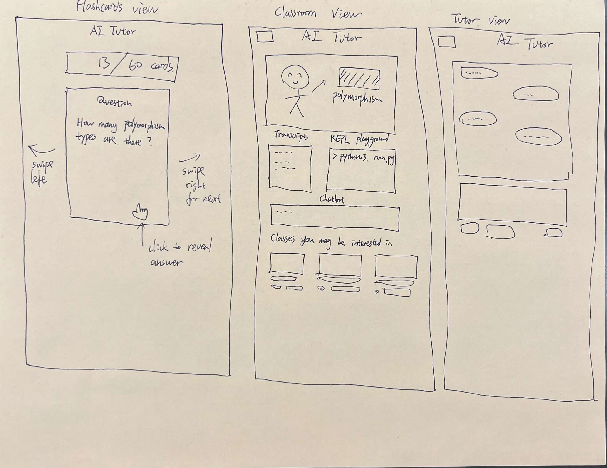
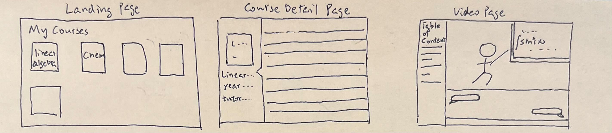
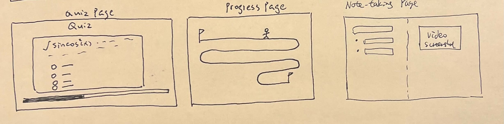
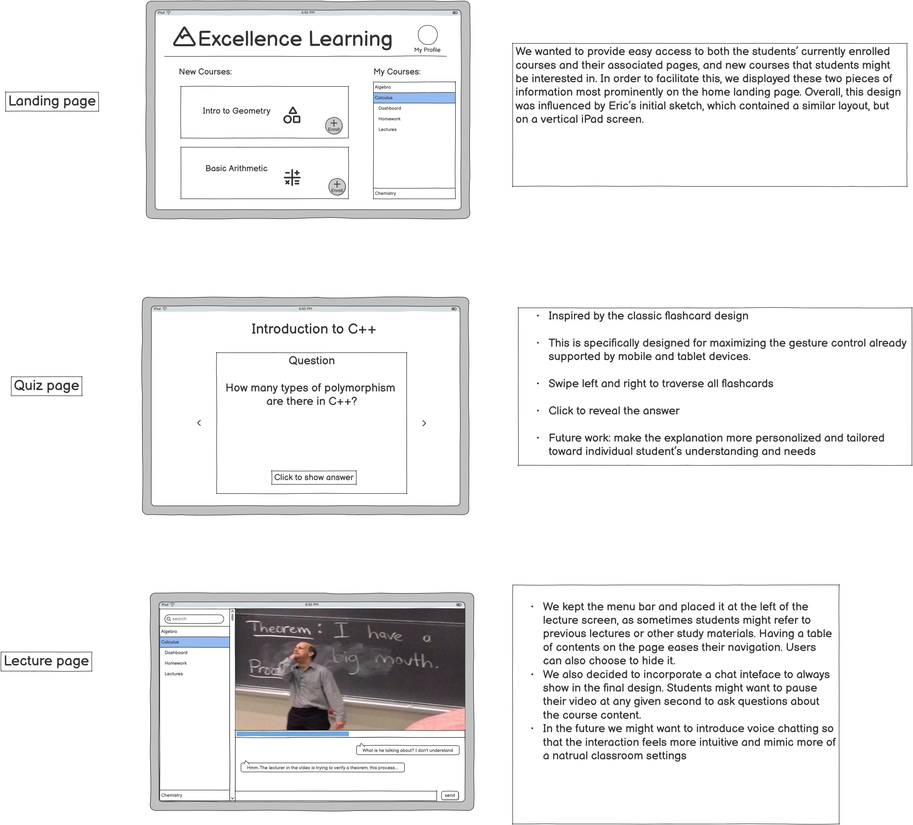
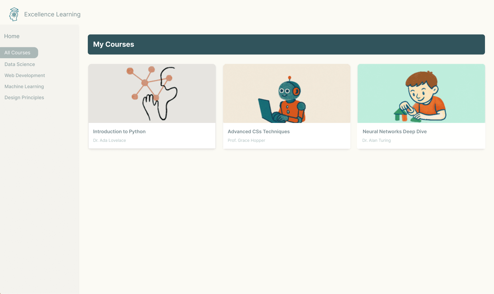
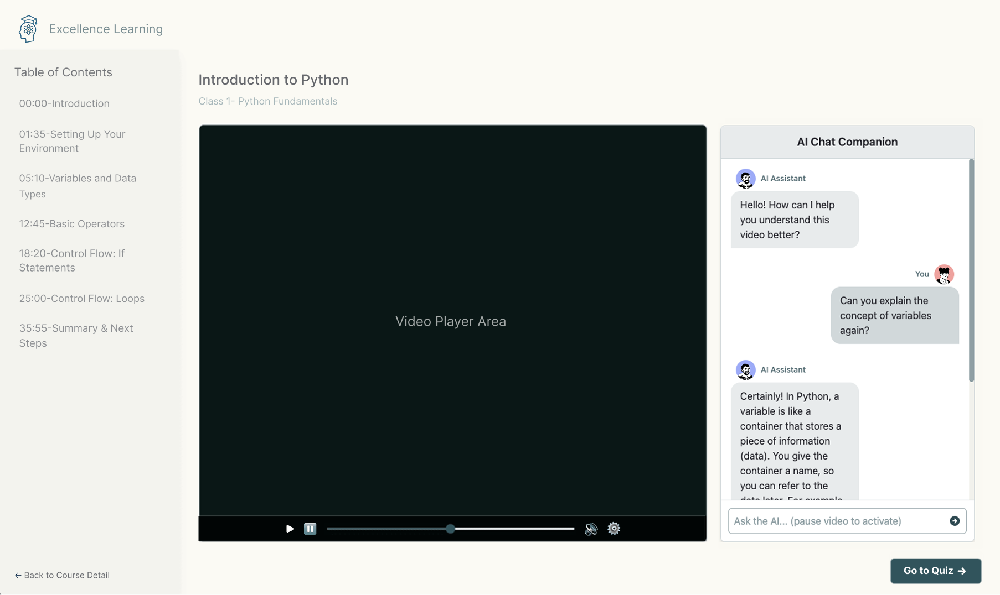
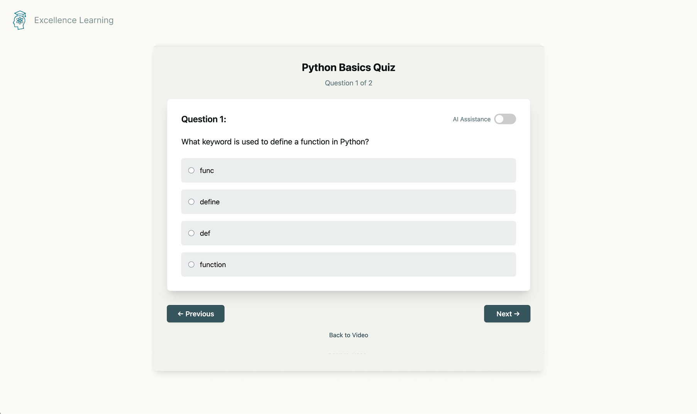

Iterative Design and Evaluation
by Eric Chen, Zhongzheng Xu, and Zhicheng Huang
Choosing a Startup
Our goal was to identify a startup, then iteratively design and evaluate interfaces to solve their need. We chose Excellence Learning, an AI-driven education startup. Our goal was to create a web interface to help learners browse and enroll in courses, watch lecture videos with a live AI assistant chat, and reinforce concepts through AI-generated quizzes. This report will discuss initial hand-drawn sketches, wireframes, and incorporating critique, culminating in a high-fidelity prototype in Figma (and findings from a usability test). In our design, we aimed to balance clarity, engagement, and consistency for the end users--goals which we believe align with those of Excellence Learning.
Sketching & Wireframing
To get the ideas flowing, we each hand-sketched some low-fidelity interface prototypes of the Excellence Learning app. We each created distinct screens for different parts of the learning platform (plus a few extras).
In this sketch, we ideated on a basic homescreen, video screen, and chat-style quiz interface:
This one shares some similarities, but makes the quiz page into a flashcard-style interface (left). It also includes a dedicated page for chatting with the AI tutor (right).

This sketch introduces a course detail page idea (middle), where participants could read about the course before choosing whether to enroll.

Finally, this last sketch explores a gameified progress page (middle) and a dedicated page for taking notes (right).

While all of these ideas could be viable for a final product, we ultimately chose to focus on the three most important screens as we progressed to create a wireframe. We deemed these to be the landing page, quiz page, and lecture page. With this in mind, we used Balsamiq to create the following lo-fi prototype, with notes explaining our design choices on the right of each screen:

In making this wireframe, some key design choices included:
- Provide easy access to students' enrolled courses and courses of potential interest.
- Use flashcard-style quizzes for approachability and compatability with mobile and tablet screens.
- Allow users watching a lecture to chat with AI live, and use a menu bar on the left to refer back to prior lectures.
Wireframe Critique
We talked with a TA to receive feedback on our initial wireframe via a critique session. Here were the key points/suggestions they mentioned:
Landing Page
- Improve alignment and layout (e.g., "my profile" and course cards should be aligned and centered)
- Make the difference between “new courses” and “my courses” more visually obvious
- Make the navbar smaller, which helps shift the focus to the new courses
- Consider the font/feeling we want to convey
Quiz Page
- Similar feedback w.r.t. alignment/layout
- Show more metadata (e.g. number of questions remaining)
- Navbar to enable navigating in/out of the page
- Add corner radius to buttons
- Simplify textual instructions for mobile devices ("click to show answer" → "show answer")
Video Page
- In the chat, include profile pictures and names next to text bubbles
- Left sidebar takes focus away from the lecture, make it less conspicuous
- Include more metadata (e.g. "class 4 out of module XX")
- Maybe have suggestions in the chatbox (e.g. suggest "explain concept_XXX" to the user)
They also suggested adding another screen showing the course's details, as this would likely be necessary information before a student chooses to enroll. Based on this feedback, it was time to create a high-fidelity version of our prototype.
Hi-Fi Prototype
Incorporating feedback from TAs, we created a hi-fi prototype in Figma. Our prototype included a Landing Page:

Course Details Page (new):
Video Page:

And Quiz Page:

These updated designs fixed alignment and consistency issues, added more metadata to provide relevant context to the user, enabled navigation in and out of each page, and minimized distractions for students watching lectures. While these designs appeared to have solved a number of the issues from our wireframe, we needed to test them with real users to validate their usability.
Feedback from Usability Testing
We came up with the following task for a usability test: Imagine you are a high school student struggling in your computer science course. You want to try AI tutoring to help you learn Python. Please enroll in Intro to Python, check out the lecture, then take the quiz to decide whether you want to use Excellence Learning.